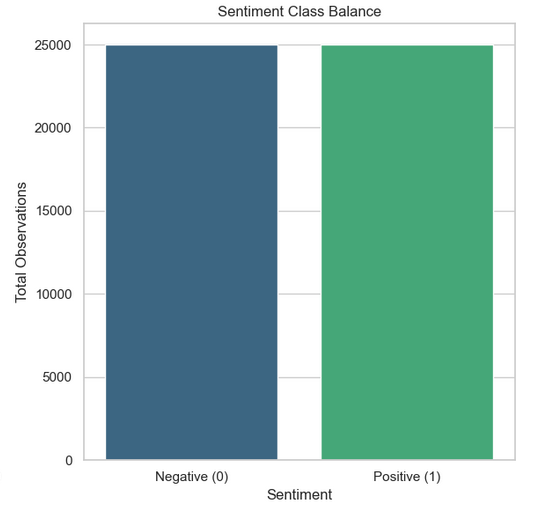

Project 3 | High-Fidelity Sentiment Distillation 📄🤖
This project develops a distilled TF-IDF NLP pipeline for high-volume consumer review data. The team reduced feature cardinality to 20,000 key markers while maintaining elite-tier accuracy (89%), creating a robust, automated, and auditable “Golden Asset” for sentiment modeling.
Links 🔗
Presentation Slides 🎤 Final Report 📄 Team Repo 👥Project Overview 📄
The project focuses on automated ingestion, distillation, and visualization of 50,000 text records. The NLP pipeline preserves negation markers, reduces noise via NLTK filtering, and applies bi-gram TF-IDF vectorization. The resulting dataset enables accurate sentiment classification while minimizing computational overhead and ensuring ethical oversight.
Project Workflow 🪜
- P3 - S1 Data Ingestion
- P3 - S1a Distillation
- P3 - S2 Sentiment Modeling
- P3 - S3 Visualization
- P3 - S4 Peer Review & Reporting
Visuals 📷



.png)
.png)

Results 🟰
Dataset completeness: 50,000 records ingested with 100% label fidelity
Feature reduction: 20,000 high-intensity markers retained
Modeling accuracy: 89% with balanced precision/recall
Golden Asset validation: Preserved negation markers and semantic integrity
Recommendations & Ethical Considerations ⚖️
- Monitor exclusion lists to preserve negation markers in distillation pipelines.
- Perform visual audits (Word Clouds) to validate automated text processing.
- Maintain peer review and reproducibility for all code changes.
- Integrate international software standards for transparency in NLP tools.
Technical Stack 🔨
Data Wrangling: pandas, os, glob
Distillation: NLTK, custom stop-word filtering
Modeling: Scikit-Learn (Naive Bayes, SVM), TF-IDF Vectorization
Visualization: Matplotlib, Seaborn, WordCloud
Environment: Python 3.x, Jupyter Notebook, GitHub Pages deployment
Conclusion ✅
The framework confirms that high-fidelity, distilled data is essential for effective sentiment modeling. Automated ingestion and distillation preserved integrity of all 50,000 records, providing a blueprint for transforming noisy text into a model-ready “Golden Asset,” improving analytic efficiency and predictive accuracy.
References 📚
- Maas, A.L., et al. (2011). Learning Word Vectors for Sentiment Analysis.
- Jurafsky, D., & Martin, J.H. (2023). Speech and Language Processing.
- Bird, S., Klein, E., & Loper, E. (2009). Natural Language Processing with Python (NLTK).
- Hutto, C.J., & Gilbert, E.E. (2014). VADER: A Rule-based Model for Sentiment Analysis.
- Kowsari, K., et al. (2019). Text Classification Algorithms: A Survey.
- Zhang, Y., & Wallace, B. (2015). A Practitioner's Guide to CNNs for Sentence Classification.
- He, K., & Zhang, X. (2016). Deep Residual Learning for Image Recognition [NLP Context].
- Vaswani, A., et al. (2017). Attention Is All You Need.
- McKinney, W. (2022). Python for Data Analysis (3rd Edition).
- Tufte, E.R. (2001). The Visual Display of Quantitative Information.